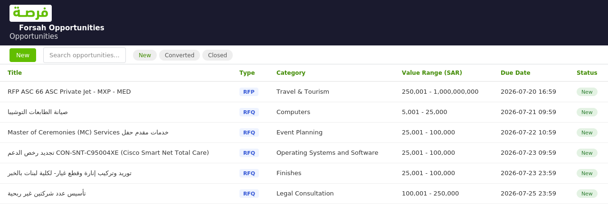

Forsah Opportunities
Sync business opportunities (RFQs & RFPs) from the Saudi "Forsah" (فرصة) SME procurement marketplace (forsah.sa) into Odoo, and convert any opportunity into a CRM opportunity in one click.

What it does
- Pulls opportunities from Forsah's public API, fully paginated
- Captures a real value range (min/max in SAR) per opportunity
- Categories & delivery cities, built automatically as opportunities sync
- One-click Convert to Opportunity into a CRM lead, with expected revenue pre-filled
- Manual Fetch Opportunities Now wizard, filterable by category or title
- Per-record Fetch Full Detail to pull the reference number
- Daily scheduled sync (installed inactive by default - tens of thousands of opportunities exist)
- Direct link back to the opportunity's page on Forsah's marketplace
Good to know
Forsah's API (forsah-api.910ths.sa) is public with no authentication required for the
listing and detail endpoints this module uses - no bot-protection workaround needed, unlike some
other government procurement portals.
Configuration
- API base URL (override only if it changes)
- Page size / pages per sync
- Restrict sync to specific categories
- Built-in "Test Connection" check
Contact & Support